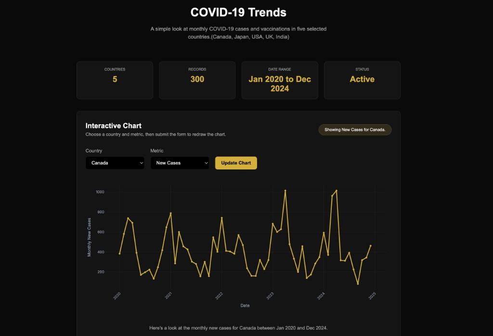
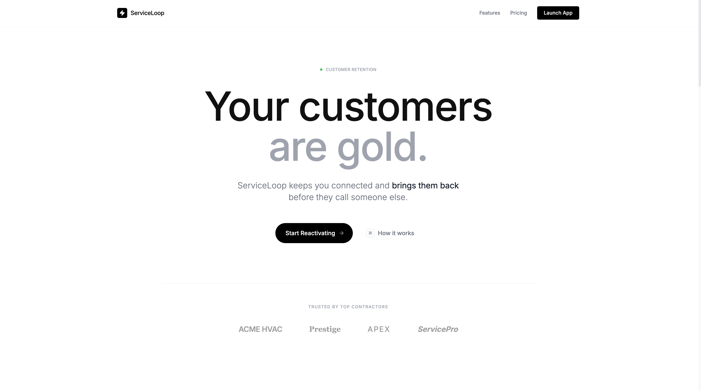
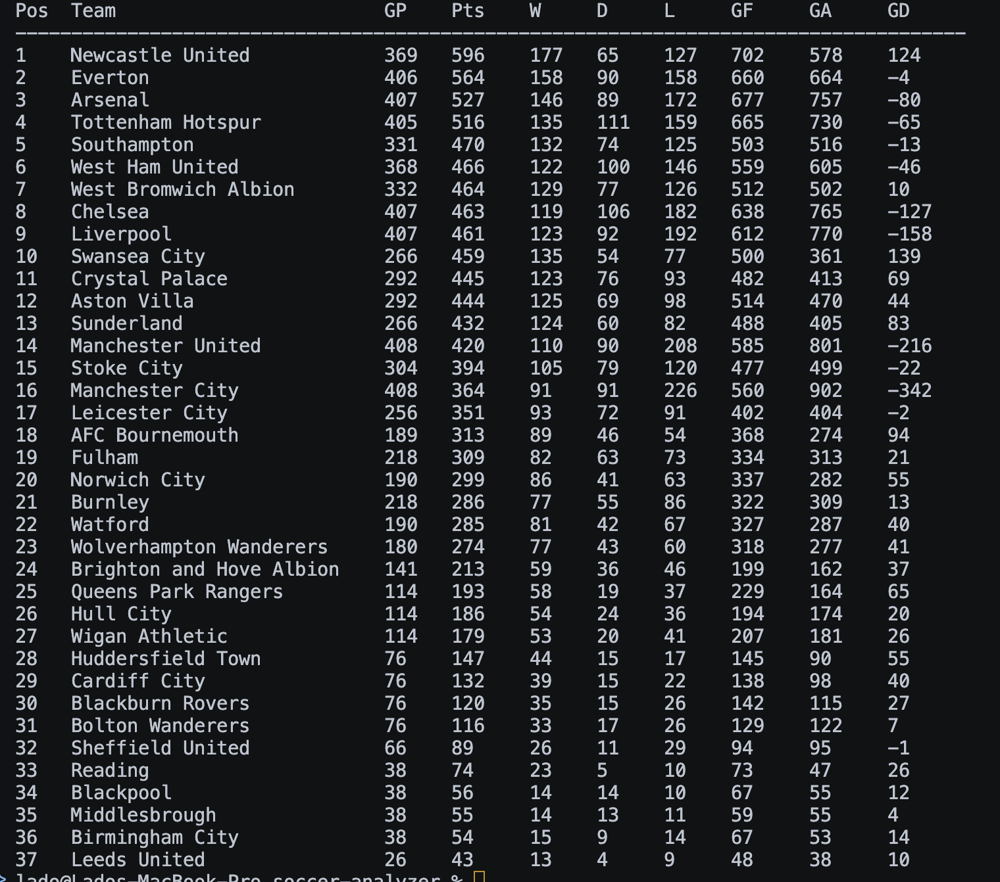
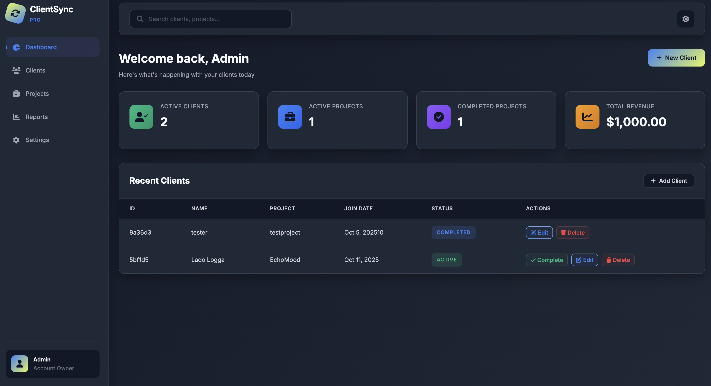
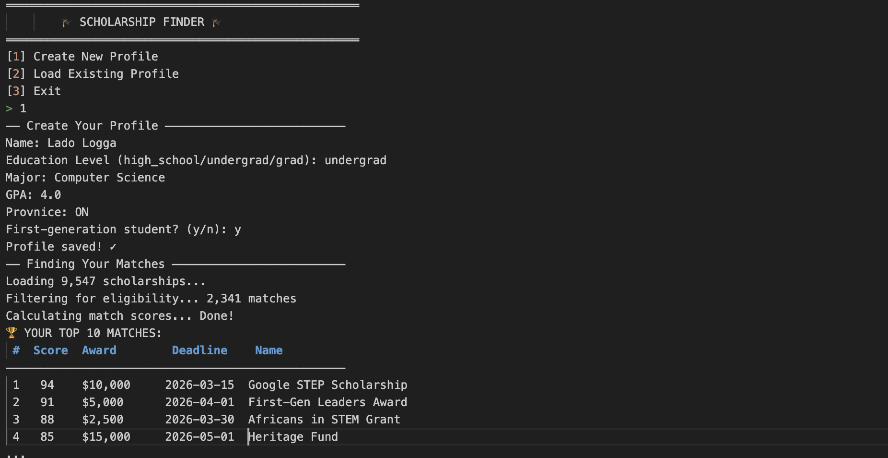

Projects

Covid-19 Trend Dashboard
An interactive data visualization dashboard that displays monthly COVID-19 trends across five countries (Canada, Japan, USA, UK, India) from 2020 to 2024. Pick a country and metric, like new cases or vaccinations, and the chart instantly redraws with smooth Plotly visuals so you can spot trends and compare how each country navigated the pandemic.

ServiceLoop
A full-stack SaaS CRM platform for service businesses to automate outreach campaigns and track sales pipelines. Features customer segmentation, email/SMS marketing, reactivation pipelines, and analytics dashboards.

Soccer Analysis System
A C++ program that analyzes Premier League matches from 2010–2021 to figure out which teams performed the best. Instead of just looking at final scores, it digs into the deeper stats such as possession numbers, shots on target, corners, fouls, passes, clearances and more to show why certain teams came out on top and how their playing style influenced their results.

ClientSync
ClientSync helps freelancers and small businesses stay organized by keeping all client details, projects, and reports together in one easy-to-use dashboard.

ScholarMatch
A smart scholarship finder built in Python that matches students with funding opportunities. Input your profile, and ScholarMatch automically searches 5000+ scholarships to find ones you actually qualify for.